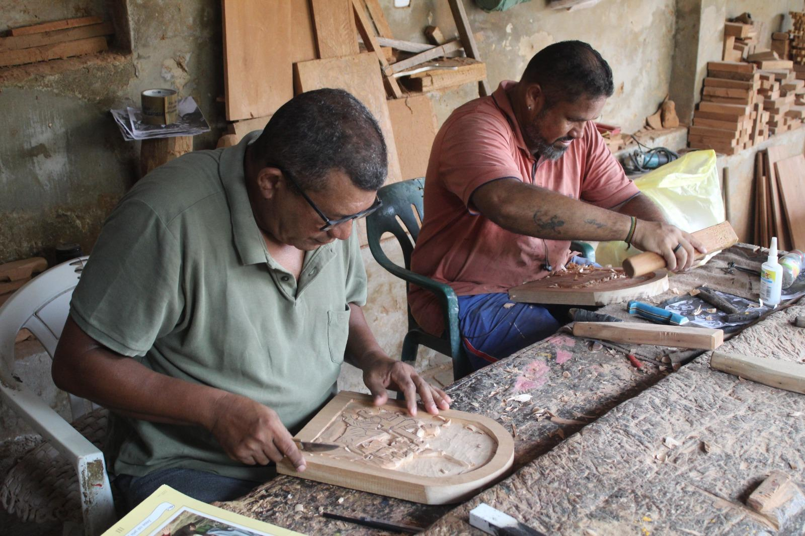

O Paradoxo do Acolhimento Piauiense

O Paradoxo da Hospitalidade: O Piauí é reconhecido por sua hospitalidade vibrante e resiliência, expressa em sua arte santeira e redes de apoio comunitário. Contudo, esse acolhimento coexiste com uma grave carência de letramento científico. Sem o conhecimento adequado, comportamentos neuroatípicos são lidos sob lentes de misticismo ou "falta de limites", criando uma barreira invisível para a inclusão real.
A "Cultura de Itinerância": No interior e no semiárido piauiense, o acesso ao diagnóstico é uma prova de persistência geográfica. As famílias vivem uma rotina ditada por deslocamentos exaustivos em vans de saúde e esperas prolongadas em rodoviárias para conseguir atendimento especializado em Teresina.
A "Mãe Guerreira": Embora o termo pareça um elogio, ele muitas vezes mascara a negligência do Estado e o burnout parental. As estatísticas mostram que 92,4% dos cuidadores são mulheres. Relatos em Teresina revelam mães que precisaram abandonar carreiras sólidas ou fechar negócios próprios, como farmácias e lojas, para se dedicarem integralmente ao suporte dos filhos devido à falta de rede pública e mediadores escolares.
A "Microcultura" de Proteção: Para evitar o julgamento moral em espaços públicos, as famílias piauienses criam redes de vigilância e proteção, muitas vezes deixando de frequentar festas e tradições locais que não são sensorialmente inclusivas.